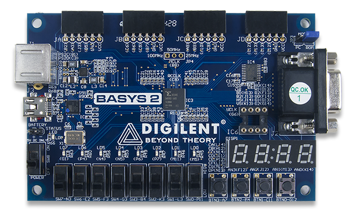
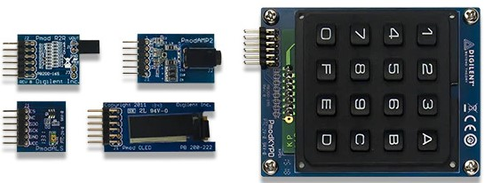

This project template forms the basis of an expansion board (Pmob) for the
Digilet Basys2 an FPGA evaluation board with four 6-pin
connectors.
Note: As single version this desing was thinking to use only 1 of 4 connectors
for desings with a diferent number of connectors, see the dual or full versions.


This project includes a PCB edge (recomended) with a 6-pin connector placed correctly to align the two boards.
(c)2025 Manuel Alejandro Baez Ponce
(c)2025 KiCad Developers